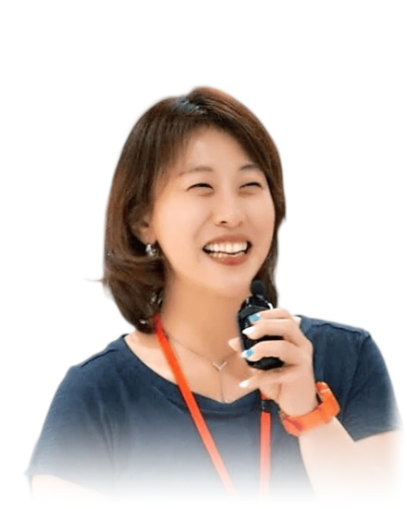

02 / 04 PROFILE
あなたの話を
聴くことから
今、どんなことを感じているのか。何を大切にしたいのか。まずは、あなたの言葉を聴くところから始めます。

PROFILE
赤澤 久美子
KUMIKO AKAZAWA
大切にしているのは、その人が何を望み、何に迷っているのかを一緒に確かめることです。
うまく説明しようとしなくても大丈夫。話しながら気持ちや考えを整理し、今できそうなことを見つけていきます。
答えを急がず
あなたのペースで
HOW I WORK
対話で大切にすること
- 01
まず 聴く
最初から解決策を決めず、今の状況や思いを聴きます。柔らかく、話しやすい時間を大切にしています。
- 02
一緒に整理する
診断結果も手がかりにしながら、気になっていることを言葉にしていきます。
- 03
試して 振り返る
日々の仕事で試したことを振り返り、次の行動を一緒に考えます。
CAREER
経歴と資格
ご本人の確認後に掲載します
経歴・資格・これまでの仕事を、確認でき次第ここに掲載します。
MOVIE
紹介動画
撮影後に掲載します
話し方や雰囲気が伝わる短い動画を、ここに置く予定です。